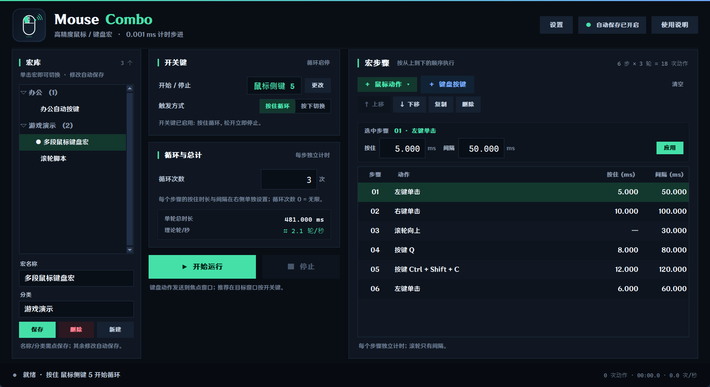

01TIME
每一步独立计时
按住和间隔分别设置，在表格里逐行修改。滚轮只保留间隔。
Mouse Combo 是 Windows 上的本地鼠标与键盘宏工具。每个动作独立设置按住时长和间隔，鼠标侧键也能开始和停止，宏库就在主窗口左侧。

主界面：宏库、每步计时和步骤表格都在一个窗口里
把开关键、动作和每一步的时间放在同一个窗口里。改宏时，只改你真正想改的那一处。
按住和间隔分别设置，在表格里逐行修改。滚轮只保留间隔。
侧键 4 / 5 可直接录制为开始停止，支持 Ctrl、Alt、Shift 组合。
命名、分类、单击切换。保存和新建都在主窗口左侧完成。
动作循环在原生 C 中执行，绝对时间线不累积漂移；底部显示真实调度误差。
不再用一个全局间隔套用整段宏。选中任意步骤，修改按住和间隔，点击应用即可。
不需要写脚本，也不需要改配置文件。安装后先定开关键，再把动作和时间排好。
Windows 10 / 11 64 位，按当前用户安装，不需要管理员权限。
键盘或鼠标侧键都能作为开关键；鼠标、键盘和滚轮步骤按顺序添加。
选中任一步修改按住与间隔；按住或切换开关键即可执行。
Windows 10 / 11，64 位。按当前用户安装，不需要管理员权限。安装前会完整显示安装说明与风险声明。
安装版会自动检查更新，下载时显示实时进度、网速和剩余时间，完成后自动安装并打开新版本。
这里只回答最常被问到的几件事；完整说明在安装引导里。
Windows 10 / 11 64 位。安装包按当前用户安装，不要求管理员权限；如果要操作以管理员身份运行的目标程序，也需要以管理员身份启动 Mouse Combo。
不是。0.001 ms 是输入、存储和内部调度的步进。实际事件到达目标程序仍受 Windows 调度、USB 回报率和目标程序影响；界面显示的是内部调度误差。
可能。程序使用 SendInput 和全局钩子，部分游戏、反作弊软件或平台规则会限制或禁止模拟输入。请遵守目标软件条款，不要用于作弊或违法用途。
宏与配置都在本机运行，不收集使用数据。安装版会访问 GitHub Releases 检查更新；源码版不会自动联网。
配置和宏保存在 %APPDATA%\MouseCombo。卸载会删除本机配置和宏文件，请先备份。
被配置为开关键的侧键会被全局吞掉，不再触发浏览器前进后退或其他默认行为；未被配置的侧键保持系统默认行为。
本程序会模拟真实鼠标点击和键盘按键，并安装全局键盘 / 鼠标钩子。它可能在真实程序中造成误操作、数据丢失、账号处罚、平台规则冲突或法律风险。请先在安全环境测试，并自行确认使用场景合法合规。
完整说明包括法律与平台规则、误操作、账号与第三方、系统兼容性、权限、隐私、时序、硬件、第三方组件与无担保责任等章节，请阅读 安装引导与完整风险声明。
安装程序的许可页也会完整显示同一份内容；必须选择“我接受”才能继续安装。
如不同意上述任何内容，请立即停止安装和使用，并删除本程序及其配置文件。
本项目仅供学习参考，不得用于任何违法行为